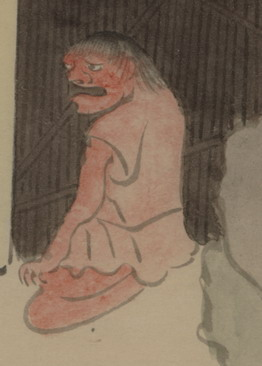

← 图鉴索引

赤鬼のような化物。髪を肩まで垂らし、赤い衣を着て、座っている。
出典：親書誌：U426_nichibunken_0150：付喪神絵詞；ツクモガミエコトバ／日付：2010／資源識別子：U426_nichibunken_0150_0113_0000
Copyright (c)2010- International Research Center for Japanese Studies, Kyoto, Japan. All rights reserved.